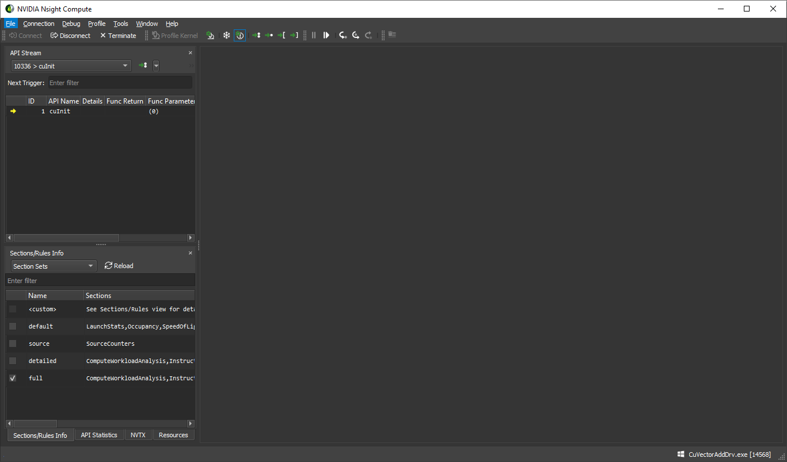
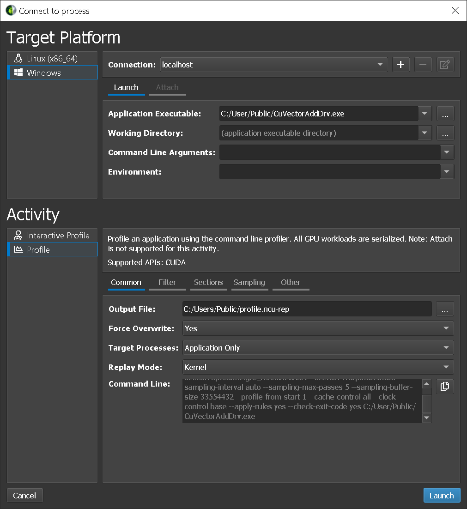
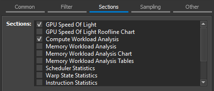
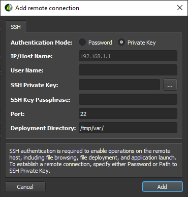

Nsight Compute
The user manual for NVIDIA Nsight Compute.
NVIDIA Nsight Compute (UI) user manual. Information on all views, controls and workflows within the tool. Description of PC sampling metrics and shipped section files.
1. Introduction
For users migrating from Visual Profiler to NVIDIA Nsight Compute, please see the Visual Profiler Transition Guide for comparison of features and workflows.
1.1. Overview
This document is a user guide to the next-generation NVIDIA Nsight Compute profiling tools. NVIDIA Nsight Compute is an interactive kernel profiler for CUDA applications. It provides detailed performance metrics and API debugging via a user interface and command line tool. In addition, its baseline feature allows users to compare results within the tool. NVIDIA Nsight Compute provides a customizable and data-driven user interface and metric collection and can be extended with analysis scripts for post-processing results.
- Interactive kernel profiler and API debugger
- Graphical profile report
- Result comparison across one or multiple reports within the tool
- Fast Data Collection
- UI and Command Line interface
- Fully customizable reports and analysis rules
2. Quickstart
The following sections provide brief step-by-step guides of how to setup and run NVIDIA Nsight Compute to collect profile information. All directories are relative to the base directory of NVIDIA Nsight Compute, unless specified otherwise.
The UI executable is called ncu-ui. A shortcut with this name is located in the base directory of the NVIDIA Nsight Compute installation. The actual executable is located in the folder host\windows-desktop-win7-x64 on Windows or host/linux-desktop-glibc_2_11_3-x64 on Linux. By default, when installing from a Linux .run file, NVIDIA Nsight Compute is located in /usr/local/cuda-<cuda-version>/nsight-compute-<version>. When installing from a .deb or .rpm package, it is located in /opt/nvidia/nsight-compute/<version> to be consistent with Nsight Systems. In Windows, the default path is C:\Program Files\NVIDIA Corporation\Nsight Compute <version>.
After starting NVIDIA Nsight Compute, by default the Welcome Page is opened. It provides links to recently opened reports and projects as well as quick access to the Connection Dialog, and the Projects dialogs. To immediately start a profile run, select Continue under Quick Launch. See Environment on how to change the start-up action.

2.1. Interactive Profile Activity
- Launch the target application from NVIDIA Nsight Compute
When starting NVIDIA Nsight Compute, the Welcome Page will appear. Click on Quick Launch to open the Connection dialog. If the Connection dialog doesn't appear, you can open it using the Connect button from the main toolbar, as long as you are not currently connected. Select your target platform on the left-hand side and your connection target (machine) from the Connection drop down. If you have your local target platform selected, localhost will become available as a connection. Use + to add a new connection target. Then, fill in the launch details and select Launch. In the Activity panel, select the Interactive Profile activity to initiate a session that allows controlling the execution of the target application and selecting the kernels of interest interactively. Press Launch to start the session.

- Launch the target application with tools instrumentation from the command lineThe ncu can act as a simple wrapper that forces the target application to load the necessary libraries for tools instrumentation. The parameter --mode=launch specifies that the target application should be launched and suspended before the first instrumented API call. That way the application waits until we connect with the UI.
$ ncu --mode=launch CuVectorAddDrv.exe - Launch NVIDIA Nsight Compute and connect to target application

Select the target machine at the top of the dialog to connect and update the list of attachable applications. By default, localhost is pre-selected if the target matches your current local platform. Select the Attach tab and the target application of interest and press Attach. Once connected, the layout of NVIDIA Nsight Compute changes into stepping mode that allows you to control the execution of any calls into the instrumented API. When connected, the API Stream window indicates that the target application waits before the very first API call.
 - Control application execution
Use the API Stream window to step the calls into the instrumented API. The dropdown at the top allows switching between different CPU threads of the application. Step In (F11), Step Over (F10), and Step Out (Shift + F11) are available from the Debug menu or the corresponding toolbar buttons. While stepping, function return values and function parameters are captured.

Use Resume (F5) and Pause to allow the program to run freely. Freeze control is available to define the behavior of threads currently not in focus, i.e. selected in the thread drop down. By default, the API Stream stops on any API call that returns an error code. This can be toggled in the Debug menu by Break On API Error.
- Isolate a kernel launch
To quickly isolate a kernel launch for profiling, use the Next API Launch button in the toolbar of the API Stream window to jump to the next kernel launch. The execution will stop before the kernel launch is executed.

- Profile a kernel launch
Once the execution of the target application is suspended at a kernel launch, additional actions become available in the UI. These actions are either available from the menu or from the toolbar. Please note that the actions are disabled, if the API stream is not at a qualifying state (not at a kernel launch or launching on an unsupported GPU). To profile, press Profile and wait until the result is shown in the Profiler Report. Profiling progress is reported in the lower right corner status bar.
Instead of manually selecting Profile, it is also possible to enable Auto Profile from the Profile menu. If enabled, each kernel matching the current kernel filter (if any) will be profiled using the current section configuration. This is especially useful if an application is to be profiled unattended, or the number of kernel launches to be profiled is very large. Sections can be enabled or disabled using the Sections/Rules Info tool window.
Profile Series allows to configure the collection of a set of profile results at once. Each result in the set is profiled with varying parameters. Series are useful to investigate the behavior of a kernel across a large set of parameters without the need to recompile and rerun the application many times.
For a detailed description of the options available in this activity, see Interactive Profile Activity.
2.2. Non-Interactive Profile Activity
- Launch the target application from NVIDIA Nsight Compute
When starting NVIDIA Nsight Compute, the Welcome Page will appear. Click on Quick Launch to open the Connection dialog. If the Connection dialog doesn’t appear, you can open it using the Connect button from the main toolbar, as long as you are not currently connected. Select your target platform on the left-hand side and your localhost from the Connection drop down. Then, fill in the launch details and select Launch. In the Activity panel, select the Profile activity to initiate a session that pre-configures the profile session and launches the command line profiler to collect the data. Provide the Output File name to enable starting the session with the Launch button.
 - Additional Launch Options
For more details on these options, see Command Line Options. The options are grouped into tabs: The Filter tab exposes the options to specify which kernels should be profiled. Options include the kernel regex filter, the number of launches to skip, and the total number of launch to profile. The Section tab allows you to select which sections should be collected for each kernel launch. The Sampling tab allows you to configure sampling options for each kernel launch. The Other tab includes the option to collect NVTX information or custom metrics via the --metrics option.
The Section tab allows you to select which sections should be collected for each kernel launch. Hover over a section to see its description as a tool-tip. To change the sections that are enabled by default, use the Sections/Rules Info tool window.

For a detailed description of the options available in this activity, see Profile Activity.
2.3. Navigate the Report
- Navigate the report
The profile report comes up by default on the Details page. You can switch between different Report Pages of the report with the dropdown labeled Page on the top-left of the report. You can also use Ctrl + Shift + N and Ctrl + Shift + P shortcut keys or corresponding toolbar button to navigate next and previous pages, respectively. A report can contain any number of results from kernel launches. The Launch dropdown allows switching between the different results in a report.

- Diffing multiple results
On the Details page, press the button Add Baseline to promote the current result in focus to become the baseline all other results from this report and any other report opened in the same instance of NVIDIA Nsight Compute gets compared to. If a baseline is set, every element on the Details page shows two values: The current value of the result in focus and the corresponding value of the baseline or the percentage of change from the corresponding baseline value.

Use the Clear Baselines entry from the dropdown button, the Profile menu or the corresponding toolbar button to remove all baselines. For more information see Baselines.
- Executing rules
On the Details page some sections may provide rules. Press the Apply button to execute an individual rule. The Apply Rules button on the top executes all available rules for the current result in focus. Rules can be user-defined too. For more information see the Customization Guide.

3. Connection Dialog
Use the Connection Dialog to launch and attach to applications on your local and remote platforms. Start by selecting the Target Platform for profiling. By default (and if supported) your local platform will be selected. Select the platform on which you would like to start the target application or connect to a running process.

When using a remote platform, you will be asked to select or create a Connection in the top drop down. To create a new connection, select + and enter your connection details. When using the local platform, localhost will be selected as the default and no further connection settings are required. You can still create or select a remote connection, if profiling will be on a remote system of the same platform.
Depending on your target platform, select either Launch or Remote Launch to launch an application for profiling on the target. Note that Remote Launch will only be available if supported on the target platform.
- Application Executable: Specifies the root application to launch. Note that this may not be the final application that you wish to profile. It can be a script or launcher that creates other processes.
- Working Directory: The directory in which the application will be launched.
- Command Line Arguments: Specify the arguments to pass to the application executable.
- Environment: The environment variables to set for the launched application.
Select Attach to attach the profiler to an application already running on the target platform. This application must have been started using another NVIDIA Nsight Compute CLI instance. The list will show all application processes running on the target system which can be attached. Select the refresh button to re-create this list.
3.1. Remote Connections
Remote devices that support SSH can also be configured as a target in the Connection Dialog. To configure a remote device, ensure an SSH-capable Target Platform is selected, then press the + button. The following configuration dialog will be presented.
NVIDIA Nsight Compute supports both password and private key authentication methods. In this dialog, select the authentication method and enter the following information:
- Password
- IP/Host Name: The IP address or host name of the target device.
- User Name: The user name to be used for the SSH connection.
- Password: The user password to be used for the SSH connection.
- Port: The port to be used for the SSH connection. (The default value is 22)
- Deployment Directory: The directory to use on the target device to deploy supporting files. The specified user must have write permissions to this location.
- Private Key 
- IP/Host Name: The IP address or host name of the target device.
- User Name: The user name to be used for the SSH connection.
- SSH Private Key: The private key that is used to authenticate to SSH server.
- SSH Key Passphrase: The passphrase for your private key.
- Port: The port to be used for the SSH connection. (The default value is 22)
- Deployment Directory: The directory to use on the target device to deploy supporting files. The specified user must have write permissions to this location.
In addition to keyfiles specified by path and plain password authentication, NVIDIA Nsight Compute supports keyboard-interactive authentication, standard keyfile path searching and SSH agents.
When all information is entered, click the Add button to make use of this new connection.
When a remote connection is selected in the Connection Dialog, the Application Executable file browser will browse the remote file system using the configured SSH connection, allowing the user to select the target application on the remote device.
- The command line profiler and supporting files are copied into the Deployment Directory on the the remote device. (Only files that do not exist or are out of date are copied.)
- Communication channels are opened to prepare for the traffic between the UI and the Application Executable.
- For Interactive Profile activities, a SOCKS proxy is started on the host machine.
- For Non-Interactive Profile activities, a remote forwarding channel is opened on the target machine to tunnel profiling information back to the host.
- The Application Executable is executed on the remote device.
- For Interactive Profile activities, a connection is established to the remote application and the profiling session begins.
- For Non-Interactive Profile activities, the remote application is executed under the command line profiler and the specified report file is generated.
- For non-interactive profiling activities, the generated report file is copied back to the host, and opened.
The progress of each of these steps is presented in the Progress Log.

Note that once either activity type has been launched remotely, the tools necessary for further profiling sessions can be found in the Deployment Directory on the remote device.
On Linux and Mac host platforms, NVIDIA Nsight Compute supports SSH remote profiling on target machines which are not directly addressable from the machine the UI is running on through the ProxyJump and ProxyCommand SSH options.
These options can be used to specify intermediate hosts to connect to or actual commands to run to obtain a socket connected to the SSH server on the target host and can be added to your SSH configuration file.
Note that for both options, NVIDIA Nsight Compute runs external commands and does not implement any mechanism to authenticate to the intermediate hosts using the credentials entered in the Connection Dialog. These credentials will only be used to authenticate to the final target in the chain of machines.
When using the ProxyJump option NVIDIA Nsight Compute uses the OpenSSH client to establish the connection to the intermediate hosts. This means that in order to use ProxyJump or ProxyCommand, a version of OpenSSH supporting these options must be installed on the host machine.
A common way to authenticate to the intermediate hosts in this case is to use a SSH agent and have it hold the private keys used for authentication.
Since the OpenSSH SSH client is used, you can also use the SSH askpass mechanism to handle these authentications in an interactive manner.
It might happen on slow networks that connections used for remote profiling through SSH time out. If this is the case, the ConnectTimeout option can be used to set the desired timeout value.
A known limitation of the remote profiling through SSH is that problems may arise if NVIDIA Nsight Compute tries to do remote profiling through SSH by connecting to the same machine it is running on. In this case, the workaround is to do local profiling through localhost.
For more information about available options for the OpenSSH client and the ecosystem of tools it can be used with for authentication refer to the official manual pages.
3.2. Interactive Profile Activity
The Interactive Profile activity allows you to initiate a session that controls the execution of the target application, similar to a debugger. You can step API calls and workloads (CUDA kernels), pause and resume, and interactively select the kernels of interest and which metrics to collect.
This activity does currently not support profiling or attaching to child processes.
- Enable CPU Call Stack
Collect the CPU-sided Call Stack at the location of each profiled kernel launch.
- Enable NVTX Support
Collect NVTX information provided by the application or its libraries. Required to support stepping to specific NVTX contexts.
- Disable Profiling Start/Stop
Ignore calls to cu(da)ProfilerStart or cu(da)ProfilerStop made by the application.
- Enable Profiling From Start
Enables profiling from the application start. Disabling this is useful if the application calls cu(da)ProfilerStart and kernels before the first call to this API should not be profiled. Note that disabling this does not prevent you from manually profiling kernels.
- Cache Control
Control the behavior of the GPU caches during profiling. Allowed values: For Flush All, all GPU caches are flushed before each kernel replay iteration during profiling. While metric values in the execution environment of the application might be slightly different without invalidating the caches, this mode offers the most reproducible metric results across the replay passes and also across multiple runs of the target application.
For Flush None, no GPU caches are flushed during profiling. This can improve performance and better replicates the application behavior if only a single kernel replay pass is necessary for metric collection. However, some metric results will vary depending on prior GPU work, and between replay iterations. This can lead to inconsistent and out-of-bounds metric values.
- Clock Control
Control the behavior of the GPU clocks during profiling. Allowed values: For Base, GPC and memory clocks are locked to their respective base frequency during profiling. This has no impact on thermal throttling. For None, no GPC or memory frequencies are changed during profiling.
- Import Source
Enables permanently importing available source files into the report. Source information must be embedded in the executable, e.g. via the -lineinfo compiler option. Imported files are used in the CUDA-C view on the Source Page.
3.3. Profile Activity
The Profile activity provides a traditional, pre-configurable profiler. After configuring which kernels to profile, which metrics to collect, etc, the application is run under the profiler without interactive control. The activity completes once the application terminates. For applications that normally do not terminate on their own, e.g. interactive user interfaces, you can cancel the activity once all expected kernels are profiled.
This activity does not support attaching to processes previously launched via NVIDIA Nsight Compute. These processes will be shown grayed out in the Attach tab.
- Output File
Path to report file where the collected profile should be stored. If not present, the report extension .ncu-rep is added automatically. The placeholder %i is supported for the filename component. It is replaced by a sequentially increasing number to create a unique filename. This maps to the --export command line option.
- Force Overwrite
If set, existing report file are overwritten. This maps to the --force-overwrite command line option.
- Target Processes
Select the processes you want to profile. In mode Application Only, only the root application process is profiled. In mode all, the root application process and all its child processes are profiled. This maps to the --target-processes command line option.
- Replay Mode
Select the method for replaying kernel launches multiple times. In mode Kernel, individual kernel launches are replayed transparently during the single execution of the target application. In mode Application, the entire target application is relaunched multiple times. In each iteration, additional data for the target kernel launches is collected. Application replay requires the program execution to be deterministic. This maps to the --replay-mode command line option. See the Kernel Profiling Guide for more details on the replay modes.
- Additional Options
All remaining options map to their command line profiler equivalents. See the Command Line Options for details.
3.4. Reset
Entries in the connection dialog are saved as part of the current project. When working in a custom project, simply close the project to reset the dialog.
When not working in a custom project, entries are stored as part of the default project. You can delete all information from the default project by closing NVIDIA Nsight Compute and then deleting the project file from disk.
4. Main Menu and Toolbar
Information on the main menu and toolbar.

4.2. Main Toolbar
The main toolbar shows commonly used operations from the main menu. See Main Menu for their description.
4.3. Status Banners
Status banners are used to display important messages, such as profiler errors. The message can be dismissed by clicking the 'X' button. The number of banners shown at the same time is limited and old messages can get dismissed automatically if new ones appear. Use the Output Messages window to see the complete message history.

5. Tool Windows
5.1. API Statistics
The API Statistics window is available when NVIDIA Nsight Compute is connected to a target application. It opens by default as soon as the connection is established. It can be re-opened using Debug > API Statistics from the main menu.

Whenever the target application is suspended, it shows a summary of tracked API calls with some statistical information, such as the number of calls, their total, average, minimum and maximum duration. Note that this view cannot be used as a replacement for Nsight Systems when trying to optimize CPU performance of your application.
The Reset button deletes all statistics collected to the current point and starts a new collection. Use the Export to CSV button to export the current statistics to a CSV file.
5.2. API Stream
The API Stream window is available when NVIDIA Nsight Compute is connected to a target application. It opens by default as soon as the connection is established. It can be re-opened using Debug > API Stream from the main menu.

Whenever the target application is suspended, the window shows the history of API calls and traced kernel launches. The currently suspended API call or kernel launch (activity) is marked with a yellow arrow. If the suspension is at a subcall, the parent call is marked with a green arrow. The API call or kernel is suspended before being executed.
For each activity, further information is shown such as the kernel name or the function parameters (Func Parameters) and return value (Func Return). Note that the function return value will only become available once you step out or over the API call.
Use the Current Thread dropdown to switch between the active threads. The dropdown shows the thread ID followed by the current API name. One of several options can be chosen in the trigger dropdown, which are executed by the adjacent >> button. Run to Next Kernel resumes execution until the next kernel launch is found in any enabled thread. Run to Next API Call resumes execution until the next API call matching Next Trigger is found in any enabled thread. Run to Next Range Start resumes execution until the next start of an active profiler range is found. Profiler ranges are defined by using the cu(da)ProfilerStart/Stop API calls. Run to Next Range Stop resumes execution until the next stop of an active profiler range is found. The API Level dropdown changes which API levels are shown in the stream. The Export to CSV button exports the currently visible stream to a CSV file.
5.3. Baselines
The Baselines tool window can be opened by clicking the Baselines entry in the Profile menu. It provides a centralized place from which to manage configured baselines. (Refer to Baselines, for information on how to create baselines from profile results.)

The baseline visibility can be controlled by clicking on the check box in a table row. When the check box is checked, the baseline will be visible in the summary header as well as all graphs in all sections. When unchecked the baseline will be hidden and will not contribute to metric difference calculations.
The baseline color can be changed by double-clicking on the color swatch in the table row. The color dialog which is opened provides the ability to choose an arbitrary color as well as offers a palette of predefined colors associated with the stock baseline color rotation.
The baseline name can be changed by double-clicking on the Name column in the table row. The name must not be empty and must be less than the Maximum Baseline Name Length as specified in the options dialog.
The z-order of a selected baseline can be changed by clicking the Move Baseline Up and Move Baseline Down buttons in the tool bar. When a baseline is moved up or down its new position will be reflected in the report header as well as in each graph. Currently, only one baseline may be moved at a time.
The selected baselines may be removed by clicking on the Clear Selected Baselines button in the tool bar. All baselines can be removed at once by clicking on the Clear All Baselines button, from either the global tool bar or the tool window tool bar.
The configured baselines can be saved to a file by clicking on the Save Baselines button in the tool bar. By default baseline files use the .ncu-bln extension. Baseline files can be opened locally and/or shared with other users.
Baseline information can be loaded by clicking on the Load Baselines button in the tool bar. When a baseline file is loaded, currently configured baselines will be replaced. A dialog will be presented to the user to confirm this operation when necessary.
5.4. NVTX
The NVTX window is available when NVIDIA Nsight Compute is connected to a target application. If closed, it can be re-opened using Debug > NVTX from the main menu. Whenever the target application is suspended, the window shows the state of all active NVTX domains and ranges in the currently selected thread. Note that NVTX information is only tracked if the launching command line profiler instance was started with --nvtx or NVTX was enabled in the NVIDIA Nsight Compute launch dialog.

Use the Current Thread dropdown in the API Stream window to change the currently selected thread. NVIDIA Nsight Compute supports NVTX named resources, such as threads, CUDA devices, CUDA contexts, etc. If a resource is named using NVTX, the appropriate UI elements will be updated.

5.5. Resources
The Resources window is available when NVIDIA Nsight Compute is connected to a target application. It shows information about the currently known resources, such as CUDA devices, CUDA streams or kernels. The window is updated every time the target application is suspended. If closed, it can be re-opened using Debug > Resources from the main menu.

Using the dropdown on the top, different views can be selected, where each view is specific to one kind of resource (context, stream, kernel, …). The Filter edit allows you to create filter expressions using the column headers of the currently selected resource.
The resource table shows all information for each resource instance. Each instance has a unique ID, the API Call ID when this resource was created, its handle, associated handles, and further parameters. When a resource is destroyed, it is removed from its table.
- REUSE_STREAM_SUBPOOL: The memory object was allocated in memory that was previously freed. The memory was backed by the memory pool set as current for the stream on which the allocation was made.
- USE_EXISTING_POOL_MEMORY: The memory object was allocated in memory that was previously freed. The memory is backed by the default memory pool of the stream on which the allocation was made.
- REUSE_EVENT_DEPENDENCIES: The memory object was allocated in memory that was previously freed in another stream of the same context. A stream ordering dependency of the allocating stream on the free action existed. Cuda events and null stream interactions can create the required stream ordered dependencies.
- REUSE_OPPORTUNISTIC: The memory object was allocated in memory that was previously freed in another stream of the same context. However, no dependency between the free and allocation existed. This mode requires that the free be already committed at the time the allocation is requested. Changes in execution behavior might result in different modes for multiple runs of the application.
- REUSE_INTERNAL_DEPENDENCIES: The memory object was allocated in memory that was previously freed in another stream of the same context. New internal stream dependencies may have been added in order to establish the stream ordering required to reuse a piece of memory previously released.
- REQUEST_NEW_ALLOCATION: New memory had to be allocated for this memory object as no viable reusable pool memory was found. The allocation performance is comparable to using the non-asynchronous malloc/free APIs.
5.6. Sections/Rules Info
The Sections/Rules Info window can be opened from the main menu using Profile > Sections/Rules Info. It tracks all section sets, sections and rules currently loaded in NVIDIA Nsight Compute, independent from a specific connection or report. The directory to load those files from can be configured in the Profile options dialog. It is used to inspect available sets, sections and rules, as well as to configure which should be collected, and which rules should be applied. The window has two views, which can be selected using the dropdown in its header.
The Section Sets view shows all available section sets. Each set is associated with a number of sections. You can choose a set appropriate to the level of detail for which you want to collect performance metrics. Sets which collect more detailed information normally incur higher runtime overhead during profiling.
When enabling a set in this view, the associated sections are enabled in the Sections/Rules view. When disabling a set in this view, the associated sections in the Sections/Rules view are disabled. If no set is enabled, or if sections are manually enabled/disabled in the Sections/Rules view, the <custom> entry is marked active to represent that no section set is currently enabled. Note that the default set is enabled by default.
Whenever a kernel is profiled manually, or when auto-profiling is enabled, only sections enabled in the Sections/Rules view are collected. Similarly, whenever rules are applied, only rules enabled in this view are active.
The enabled states of sections and rules are persisted across NVIDIA Nsight Compute launches. The Reload button reloads all sections and rules from disk again. If a new section or rule is found, it will be enabled if possible. If any errors occur while loading a rule, they will be listed in an extra entry with a warning icon and a description of the error.
Use the Enable All and Disable All checkboxes to enable or disable all sections and rules at once. The Filter text box can be used to filter what is currently shown in the view. It does not alter activation of any entry.
The table shows sections and rules with their activation status, their relationship and further parameters, such as associated metrics or the original file on disk. Rules associated with a section are shown as children of their section entry. Rules independent of any section are shown under an additional Independent Rules entry.
Double-clicking an entry in the table's Filename column opens this file as a document. It can be edited and saved directly in NVIDIA Nsight Compute. After editing the file, Reload must be selected to apply those changes.
When a section or rule file is modified, the entry in the State column will show User Modified to reflect that it has been modified from its default state. When a User Modified row is selected, the Restore button will be enabled. Clicking the Restore button will restore the entry to its default state and automatically Reload the sections and rules.
Similarly, when a stock section or rule file is removed from the configured Sections Directory (specified in the Profile options dialog), the State column will show User Deleted. User Deleted files can also be restored using the Restore button.
Section and rule files that are created by the user (and not shipped with NVIDIA Nsight Compute) will show up as User Created in the state column.
See the Sections and Rules for the list of default sections for NVIDIA Nsight Compute.
6. Profiler Report
The profiler report contains all the information collected during profiling for each kernel launch. In the user interface, it consists of a header with general information, as well as controls to switch between report pages or individual collected launches. By default, the report starts with the Details page selected.
6.1. Header
The Page dropdown can be used to switch between the available report pages, which are explained in detail in the next section.

The Launch dropdown can be used to switch between all collected kernel launches. The information displayed in each page commonly represents the selected launch instance. On some pages (e.g. Raw), information for all launches is shown and the selected instance is highlighted. You can type in this dropdown to quickly filter and find a kernel launch.
The Apply Filters button open the filter dialog. You can use more than one filter to narrow down your results. On the filter dialog, enter your filter parameters and press OK button. The Launch dropdown will be filtered accordingly. Select the arrow dropdown to access the Clear Filters button, which removes all filters.

The Add Baseline button promotes the current result in focus to become the baseline of all other results from this report and any other report opened in the same instance of NVIDIA Nsight Compute. Select the arrow dropdown to access the Clear Baselines button, which removes all currently active baselines.
The Apply Rules button applies all rules available for this report. If rules had been applied previously, those results will be replaced. By default, rules are applied immediately once the kernel launch has been profiled. This can be changed in the options under Tools > Options > Profile > Report UI > Apply Applicable Rules Automatically.
- Copy as Image - Copies the contents of the page to the clipboard as an image.
- Save as Image - Saves the contents of the page to a file as an image.
- Save as PDF - Saves the contents of the page to a file as a PDF.
- Export to CSV - Exports the contents of page to CSV format.
- Reset to Default - Resets the page to a default state by removing any persisted settings.
Note that not all functions are available on all pages.
Information about the selected kernel is shown as Current. [+] and [-] buttons can be used to show or hide the section body content. The visibility of the output of the rules can be toggled with the r button. The info toggle button i changes the section description's visibility.
6.2. Report Pages
Use the Page dropdown in the header to switch between the report pages.
By default, when opening a report with a single profile result, the Details Page is shown. When opening a report with multiple results, the Summary Page is selected instead. You can change the default report page in the Profile options.
6.2.1. Session Page
This Session page contains basic information about the report and the machine, as well as device attributes of all devices for which launches were profiled. When switching between launch instances, the respective device attributes are highlighted.
6.2.2. Summary Page
The Summary page shows a list of all collected results in the report, with selected important metrics. It gives you a quick comparison overview across all profiled kernel launches.
Metric columns can be sorted by clicking the column header. You can transpose the table of kernels and metrics with the Transpose button. Double-click any entry to make the result the currently active one and switch to the Details Page page to inspect its performance data.
For Range Replay reports, a smaller set of columns is shown by default, as not all apply to such results.
6.2.3. Details Page
Overview
The Details page is the main page for all metric data collected during a kernel launch. The page is split into individual sections. Each section consists of a header table and an optional body that can be expanded. The sections are completely user defined and can be changed easily by updating their respective files. For more information on customizing sections, see the Customization Guide. For a list of sections shipped with NVIDIA Nsight Compute, see Sections and Rules.
By default, once a new profile result is collected, all applicable rules are applied. Any rule results will be shown as Recommendations on this page. Most rule results will be purely informative or have a warning icon to indicate some performance problem. Results with error icons typically indicate an error while applying the rule.

If a rule result references another report section, it will appear as a link in the recommendation. Select the link to scroll to the respective section. If the section was not collected in the same profile result, enable it in the Sections/Rules Info tool window.
You can add or edit comments in each section of the Details view by clicking on the comment button (speech bubble). The comment icon will be highlighted in sections that contain a comment. Comments are persisted in the report and are summarized in the Comments Page.

Besides their header, sections typically have one or more bodies with additional charts or tables. Click the triangle Expander icon in the top-left corner of each section to show or hide those. If a section has multiple bodies, a dropdown in their top-right corner allows you to switch between them.

Rooflines
If enabled, the GPU Speed Of Light Roofline Chart section contains a Roofline chart that is particularly helpful for visualizing kernel performance at a glance. (To enable roofline charts in the report, ensure that the section is enabled when profiling.) More information on how to use and read this chart can be found in Roofline Charts. NVIDIA Nsight Compute ships with several different definitions for roofline charts, including hierarchical rooflines. These additional rooflines are defined in different section files. While not part of the full section set, a new section set called roofline was added to collect and show all rooflines in one report. The idea of hierarchical rooflines is that they define multiple ceilings that represent the limiters of a hardware hierarchy. For example, a hierarchical roofline focusing on the memory hierarchy could have ceilings for the throughputs of the L1 cache, L2 cache and device memory. If the achieved performance of a kernel is limited by one of the ceilings of a hierarchical roofline, it can indicate that the corresponding unit of the hierarchy is a potential bottleneck.

The roofline chart can be zoomed and panned for more effective data analysis, using the controls in the table below.
| Zoom In | Zoom Out | Zoom Reset | Pan |
|---|---|---|---|
|
|
|
|
Memory
If enabled, the Memory Workload Analysis section contains a Memory chart that visualizes data transfers, cache hit rates, instructions and memory requests. More information on how to use and read this chart can be found in the Kernel Profiling Guide.
Source
Sections such as Source Counters can contain source hot spot tables. These tables indicate the N highest or lowest values of one or more metrics in your kernel source code. Select the location links to navigate directly to this location in the Source Page. Hover the mouse over a value to see which metrics contribute to it.

Occupancy
You can open the Occupancy Calculator by clicking on the calculator button in the report header or in the header of the Occupancy Section.
Range Replay
Note that for Range Replay results some UI elements, analysis rules, metrics or section body items such as charts or tables might not be available, as they only apply to kernel launch-based results. The filters can be checked in the corresponding section files.
6.2.4. Source Page
Overview
The Source page correlates assembly (SASS) with high-level code and PTX. In addition, it displays metrics that can be correlated with source code. It is filtered to only show (SASS) functions that were executed in the kernel launch.
Views allow you to fix columns to not move out of view when scrolling horizontally. By default, the Source column is fixed to the left, enabling easy inspection of all metrics correlated to a source line. To change fixing of columns, right click the column header and select Freeze or Unfreeze, respectively.

Source Correlation
The View dropdown can be used to select different code (correlation) options. This includes SASS, PTX and Source (CUDA-C), as well as their combinations. Which options are available depends on the source information embedded into the executable.
It is possible that some SASS instructions are shown as N/A. Those instructions are not currently exposed publicly.
You can use the Find (source code) line edit to search the Source column. Enter the text to search and use the associated buttons to find the next or previous occurrence in this column. While the line edit is selected, you can also use the Enter or Shift+Enter keys to search for the next or previous occurrence, respectively.
The CUDA-C view is available if the application was built with the -lineinfo or --generate-line-info nvcc flag to correlate SASS and source. When selecting a line in the left-hand- or right-hand-side view, any correlated lines in the opposite view are highlighted. However, when the Show Single File For Multi-File Sources option is set to Yes, the target file or source object must already be selected in the respective view for those correlated lines to be shown.
When using separate linking at the ELF level, there is no PTX available in the ELF that would correspond to the final SASS. As such, NVIDIA Nsight Compute does not show any PTX even though it would be available statically in the executable and could be shown with cuobjdump -all -lptx. However, this is a pre-linked version of the PTX and cannot be reliably used for correlation.
Only filenames are shown in the view, together with a File Not Found error, if the source files cannot be found in their original location. This can occur, for example, if the report was moved to a different system. Select a filename and click the Resolve button above to specify where this source can be found on the local filesystem. However, the view always shows the source files if the import source option was selected during profiling, and the files were available at that time. If a file is found in its original or any source lookup location, but its attributes don't match, a File Mismatch error is shown. See the Source Lookup options for changing file lookup behavior.
If the report was collected using remote profiling, and automatic resolution of remote files is enabled in the Profile options, NVIDIA Nsight Compute will attempt to load the source from the remote target. If the connection credentials are not yet available in the current NVIDIA Nsight Compute instance, they are prompted in a dialog. Loading from a remote target is currently only available for Linux x86_64 targets and Linux and Windows hosts.
Metrics Correlation
The heatmap on the right-hand side of each view can be used to quickly identify locations with high metric values of the currently selected metric in the dropdown. The heatmap uses a black-body radiation color scale where black denotes the lowest mapped value and white the highest, respectively. The current scale is shown when clicking and holding the heatmap with the right mouse button.
If a view contains multiple source files or functions, [+] and [-] buttons are shown. These can be used to expand or collapse the view, thereby showing or hiding the file or function content except for its header. If collapsed, all metrics are shown aggregated to provide a quick overview.

- Live Registers
Number of registers that need to be kept valid by the compiler. A high value indicates that many registers are required at this code location, potentially increasing the register pressure and the maximum number of register required by the kernel.
The total number of registers reported as launch__registers_per_thread may be significantly higher than the maximum live registers. The compiler may need to allocate specific registers that can creates holes in the allocation, thereby affecting launch__registers_per_thread, even if the maximum live registers is smaller. This may happen due to ABI restrictions, or restrictions enforced by particular hardware instructions. The compiler may not have a complete picture of which registers may be used in either callee or caller and has to obey ABI conventions, thereby allocating different registers even if some register could have theoretically been re-used.
- Warp Stall Sampling (All Cycles)1
The number of samples from the Statistical Sampler at this program location.
- Warp Stall Sampling (Not-issued Cycles)2
The number of samples from the Statistical Sampler at this program location on cycles the warp scheduler issued no instructions. Note that (Not Issued) samples may be taken on a different profiling pass than (All) samples mentioned above, so their values do not strictly correlate.
This metric is only available on devices with compute capability 7.0 or higher.
- Instructions Executed
Number of times the source (instruction) was executed per individual warp, independent of the number of participating threads within each warp.
- Thread Instructions Executed
Number of times the source (instruction) was executed by any thread, regardless of predicate presence or evaluation.
- Predicated-On Thread Instructions Executed
Number of times the source (instruction) was executed by any active, predicated-on thread. For instructions that are executed unconditionally (i.e. without predicate), this is the number of active threads in the warp, multiplied with the respective Instructions Executed value.
- Avg. Threads Executed
Average number of thread-level executed instructions per warp, regardless of their predicate.
- Avg. Predicated-On Threads Executed
Average number of predicated-on thread-level executed instructions per warp.
- Divergent Branches
Number of divergent branch targets, including fallthrough. Incremented only when there are two or more active threads with divergent targets. Divergent branches can lead to warp stalls due to resolving the branch or instruction cache misses.
- Information on Memory Operations
Label Name Description Address Space memory_type The accessed address space (global/local/shared). Access Operation memory_access_type The type of memory access (e.g. load or store). Access Size memory_access_size_type The size of the memory access, in bits. L1 Tag Requests Global memory_l1_tag_requests_global Number of L1 tag requests generated by global memory instructions. L1 Wavefronts Shared Excessive derived__memory_l1_wavefronts_shared_excessive Excessive number of wavefronts in L1 from shared memory instructions, because not all not predicated-off threads performed the operation. Note: This is a derived metric which can not be collected directly. L1 Wavefronts Shared memory_l1_wavefronts_shared Number of wavefronts in L1 from shared memory instructions. L1 Wavefronts Shared Ideal memory_l1_wavefronts_shared_ideal Ideal number of wavefronts in L1 from shared memory instructions, assuming each not predicated-off thread performed the operation. L2 Theoretical Sectors Global Excessive derived__memory_l2_theoretical_sectors_global_excessive Excessive theoretical number of sectors requested in L2 from global memory instructions, because not all not predicated-off threads performed the operation. Note: This is a derived metric which can not be collected directly. L2 Theoretical Sectors Global memory_l2_theoretical_sectors_global Theoretical number of sectors requested in L2 from global memory instructions. L2 Theoretical Sectors Global Ideal memory_l2_theoretical_sectors_global_ideal Ideal number of sectors requested in L2 from global memory instructions, assuming each not predicated-off thread performed the operation. L2 Theoretical Sectors Local memory_l2_theoretical_sectors_local Theoretical number of sectors requested in L2 from local memory instructions. All L1/L2 Sectors/Wavefronts/Requests metrics give the number of achieved (actually required), ideal, and excessive (achieved - ideal) sectors/wavefronts/requests. Ideal metrics indicate the number that would needed, given each not predicated-off thread performed the operation of given width. Excessive metrics indicate the required surplus over the ideal case. Reducing divergence between threads can reduce the excess amount and result in less work for the respective HW units.
Several of the above metrics on memory operations were renamed in version 2021.2 as follows:Old name New name memory_l2_sectors_global memory_l2_theoretical_sectors_global memory_l2_sectors_global_ideal memory_l2_theoretical_sectors_global_ideal memory_l2_sectors_local memory_l2_theoretical_sectors_local memory_l1_sectors_global memory_l1_tag_requests_global memory_l1_sectors_shared memory_l1_wavefronts_shared memory_l1_sectors_shared_ideal memory_l1_wavefronts_shared_ideal - L2 Explicit Evict Policy Metrics
Starting with the NVIDIA Ampere architecture the eviction policy of the L2 cache can be tuned to match the kernel's access pattern. The eviction policy can be either set implicitly for a memory window (for more details see CUaccessProperty) or set explicitly per executed memory instruction. If set explicitly, the desired eviction behavior for the cases of an L2 cache hit or miss are passed as input to the instruction. For more details refer to CUDA's Cache Eviction Priority Hints.
Label Name Description L2 Explicit Evict Policies smsp__inst_executed_memdesc_explicit_evict_type Comma separated list of configured explicit eviction policies. As the policies can be set dynamically at runtime, this list includes all policies that were part of any executed instruction. L2 Explicit Hit Policy Evict First smsp__inst_executed_memdesc_explicit_hitprop_evict_first Number of times a memory instruction was executed by any warp which had the evict_first policy set in case the access leads to a cache hit in L2. Data cached with this policy will be first in the eviction priority order and will likely be evicted when cache eviction is required. This policy is suitable for streaming data. L2 Explicit Hit Policy Evict Last smsp__inst_executed_memdesc_explicit_hitprop_evict_last Number of times a memory instruction was executed by any warp which had the evict_last policy set in case the access leads to a cache hit in L2. Data cached with this policy will be last in the eviction priority order and will likely be evicted only after other data with evict_normal or evict_first eviction policy is already evicted. This policy is suitable for data that should remain persistent in cache. L2 Explicit Hit Policy Evict Normal smsp__inst_executed_memdesc_explicit_hitprop_evict_normal Number of times a memory instruction was executed by any warp which had the evict_normal (default) policy set in case the access leads to a cache hit in L2. L2 Explicit Hit Policy Evict Normal Demote smsp__inst_executed_memdesc_explicit_hitprop_evict_normal_demote Number of times a memory instruction was executed by any warp which had the evict_normal_demote policy set in case the access leads to a cache hit in L2. L2 Explicit Miss Policy Evict First smsp__inst_executed_memdesc_explicit_missprop_evict_first Number of times a memory instruction was executed by any warp which had the evict_first policy set in case the access leads to a cache miss in L2. Data cached with this policy will be first in the eviction priority order and will likely be evicted cache eviction is required. This policy is suitable for streaming data. L2 Explicit Miss Policy Evict Normal smsp__inst_executed_memdesc_explicit_missprop_evict_normal Number of times a memory instruction was executed by any warp which had the evict_normal (default) policy set in case the access leads to a cache miss in L2. - Individual Warp Stall Sampling Metrics
All stall_* metrics show the information combined in Warp Stall Sampling individually. See Statistical Sampler for their descriptions.
- See the Customization Guide on how to add additional metrics for this view.
Register Dependencies
Dependencies between registers are displayed in the SASS view. When a register is read, all the potential addresses where it could have been written are found. The links between these lines are drawn in the view. All dependencies for registers, predicates, uniform registers and uniform predicates are shown in their respective columns.

The picture above shows some dependencies for a simple CUDA kernel. On the first row, which is line 9 of the SASS code, we can see writes on registers R2 and R3, represented by filled triangles pointing to the left. These registers are then read on lines 17, 20 and 23, and this is represented by regular triangles pointing to the right. There are also some lines where both types of triangles are on the same line, which means that a read and a write occured for the same register.
Dependencies across source files and functions are not tracked.
The Register Dependencies Tracking feature is enabled by default, but can be disabled completely in Tools > Options > Profile > Report Source Page > Enable Register Dependencies.
6.2.5. Comments Page
The Comments page aggregates all section comments in a single view and allows the user to edit those comments on any launch instance or section, as well as on the overall report. Comments are persisted with the report. If a section comment is added, the comment icon of the respective section in the Details Page will be highlighted.
6.2.6. Call Stack / NVTX Page
The CPU Call Stack section of this report page shows the CPU call stack for the executing CPU thread at the time the kernel was launched. For this information to show up in the profiler report, the option to collect CPU call stacks had to be enabled in the Connection Dialog or using the corresponding NVIDIA Nsight Compute CLI command line parameter.

The NVTX State section of this report page shows the NVTX context when the kernel was launched. All thread-specific information is with respect to the thread of the kernel's launch API call. Note that NVTX information is only collected if the profiler is started with NVTX support enabled, either in the Connection Dialog or using the NVIDIA Nsight Compute CLI command line parameter.

6.2.7. Raw Page
The Raw page shows a list of all collected metrics with their units per profiled kernel launch. It can be exported, for example, to CSV format for further analysis. The page features a filter edit to quickly find specific metrics. You can transpose the table of kernels and metrics by using the Transpose button.
6.3. Metrics and Units
Numeric metric values are shown in various places in the report, including the header and tables and charts on most pages. NVIDIA Nsight Compute supports various ways to display those metrics and their values.
When available and applicable to the UI component, metrics are shown along with their unit. This is to make it apparent if a metric represents cycles, threads, bytes/s, and so on. The unit will normally be shown in rectangular brackets, e.g. Metric Name [bytes] 128.
By default, units are scaled automatically so that metric values are shown with a reasonable order of magnitude. Units are scaled using their SI-factors, i.e. byte-based units are scaled using a factor of 1000 and the prefixes K, M, G, etc. Time-based units are also scaled using a factor of 1000, with the prefixes n, u and m. This scaling can be disabled in the Profile options.
Metrics which could not be collected are shown as n/a and assigned a warning icon. If the metric floating point value is out of the regular range (i.e. nan (Not a number) or inf (infinite)), they are also assigned a warning icon. The exception are metrics for which these values are expected and which are white-listed internally.
7. Baselines
NVIDIA Nsight Compute supports diffing collected results across one or multiple reports using Baselines. Each result in any report can be promoted to a baseline. This causes metric values from all results in all reports to show the difference to the baseline. If multiple baselines are selected simultaneously, metric values are compared to the average across all current baselines. Note that currently, baselines are not stored with a report and are only available as long as the same NVIDIA Nsight Compute instance is open.

Select Add Baseline to promote the current result in focus to become a baseline. If a baseline is set, most metrics on the Details Page, Raw Page and Summary Page show two values: the current value of the result in focus, and the corresponding value of the baseline or the percentage of change from the corresponding baseline value. (Note that an infinite percentage gain, inf%, may be displayed when the baseline value for the metric is zero, while the focus value is not.)
<focus value> (<difference to baselines average [%]>, z=<standard score>@<number of values>)The standard score is the difference between the current value and the average across all baselines, normalized by the standard deviation. If the number of metric values contributing to the standard score equals the number of results (current and all baselines), the @<number of values> notation is omitted.

Hovering the mouse over a baseline name allows the user to edit the displayed name. Hovering over the baseline color icon allows the user to remove this specific baseline from the list.
Use the Clear Baselines entry from the dropdown button, the Profile menu, or the corresponding toolbar button to remove all baselines.
8. Standalone Source Viewer
NVIDIA Nsight Compute includes a standalone source viewer for cubin files. This view is identical to the Source Page, except that it won’t include any performance metrics.
Cubin files can be opened from the File > Open main menu command. The SM Selection dialog will be shown before opening the standalone source view. If available, the SM version present in the file name is pre-selected. For example, if your file name is mergeSort.sm_80.cubin then SM 8.0 will be pre-selected in the dialog. Choose the appropriate SM version from the drop down menu if it’s not included in the file name.

Click Ok button to open Standalone Source Viewer.

9. Occupancy Calculator
NVIDIA Nsight Compute provides an Occupancy Calculator that allows you to compute the multiprocessor occupancy of a GPU for a given CUDA kernel. It offers feature parity to the CUDA Occupancy Calculator spreadsheet.
The Occupancy Calculator can be opened directly from a profile report or as a new activity. The occupancy calculator data can be saved to a file using File > Save. By default, the file uses the .ncu-occ extension. The occupancy calculator file can be opened using File > Open File
- Launching from the Connection Dialog
Select the Occupancy Calculator activity from the connection dialog. You can optionally specify an occupancy calculator data file, which is used to initialize the calculator with the data from the saved file. Click the Launch button to open the Occupancy Calculator.

- Launching from the Profiler Report
The Occupancy Calculator can be opened from the Profiler Report using the calculator button located in the report header or in the header of the Occupancy section on the Detail Page.
Details page header Occupancy section header
Occupancy section header
The user interface consists of an input section as well as tables and graphs that display information about GPU occupancy. To use the calculator, change the input values in the input section, click the Apply button and examine the tables and graphs.
9.1. Tables
The tables show the occupancy, as well as the number of active threads, warps, and thread blocks per multiprocessor, and the maximum number of active blocks on the GPU.

9.2. Graphs
The graphs show the occupancy for your chosen block size as a blue circle, and for all other possible block sizes as a line graph.


10. Acceleration Structure Viewer
The Acceleration Structure Viewer allows inspection of acceleration structures built using the OptiX API. In modern ray tracing APIs like OptiX, acceleration structures are data structures describing the rendered scene's geometries that will be intersected when performing ray tracing operations. More information concerning acceleration structures can be found in the OptiX programming guide.
It is the responsibility of the user to set these up and pass them to the OptiX API which translates them to internal data structures that perform well on modern GPUs. The description created by the user can be very error-prone and it is sometimes hard to understand why the rendered result is not as expected. The Acceleration Structure Viewer is a component allowing OptiX users to inspect the acceleration structures they build before launching a ray tracing pipeline.
The Acceleration Structure Viewer is opened through a button in the Resources window. The button will only be available when the currently viewed resource is OptiX: TraversableHandles. It opens the currently selected handle.
The viewer is multi-paned: it shows a hierarchical view of the acceleration structure on the left, a graphical view of the acceleration structure in the middle, and controls and options on the right. In the hierarchical tree view on the left of the viewer the instance acceleration structures (IAS), geometry acceleration structures (GAS), child instances and child geometries are shown. In addition to this, some general properties for each of them is shown such as their primitive count, surface area and size on the device.
In the hierarchical view on the left of the Acceleration Structure Viewer, the following information is displayed where applicable.
| Column | Description |
|---|---|
| Name | An identifier for each row in the hierarchy. Click on the check box next to the name to show or hide the selected geometry or hierarchy. Double-click on this entry to jump to the item in the rendering view. |
| # Prims | The number of primitives that make up this acceleration structure. |
| Surface Area | A calculation of the total surface area for the AABB that bounds the particular entry. |
| Size | The size of the output buffer on the device holding this acceleration structure. |
Performance analysis tools are accessible in the bottom left corner on the main view. These tools help identify potential performance problems that are outlined in the RTX Ray Tracing Best Practices Guide. These analysis tools aim to give a broad picture of acceleration structures that may exhibit sub-optimal performance. To find the most optimal solution, profiling and experimentation is recommended but these tools may paint a better picture as to why one structure performs poorly compared to another.
| Action | Description |
|---|---|
| Instance Overlaps | Identifies instance AABBs that overlap with other instances in 3D. Consider merging GASes when instance world-space AABBs overlap significantly to potentially increase performance. |
| Instance Heatmap | This allows you to set the threshold used by the AABB heatmap rendered in the visualizer. |
10.2. Filtering and Highlighting
The acceleration structure view supports acceleration structure filtering as well as highlighting of data matching particular characteristics. The checkboxes next to each geometry allow users to toggle the rendering of each traversable.
Geometry instances can also be selected by clicking on them in the main graphical view. Additionally, right clicking in the main graphical view gives options to hide or show all geometry, hide the selected geometry, or hide all but the selected geometry.

Beyond filtering, the view also supports highlight-based identification of geometry specified with particular flags. Checking each highlight option will identify those resources matching that flag, colorizing for easy identification. Clicking an entry in this section will dim all geometry that does not meet the filter criteria allowing items that match the filter to standout. Selecting multiple filters requires the passing geometry to meet all selected filters (e.g., AND logic). Additionally, the heading text will be updated to reflect the number of items that meet this filter criteria.
10.3. Rendering Options
Under the highlight controls, additional rendering options are available. These include methods to control the geometry colors and the ability to toggle the drawing of AABBs.
10.4. Exporting
The data displayed in the acceleration structure viewer document can be saved to file. Exporting an Acceleration Structure Viewer document allows for persisting the data you have collected beyond the immediate analysis session. This capability is particularly valuable for comparing different revisions of your geometry or sharing with others. Bookmarks are persisted as well.
11. Options
NVIDIA Nsight Compute options can be accessed via the main menu under Tools > Options. All options are persisted on disk and available the next time NVIDIA Nsight Compute is launched. When an option is changed from its default setting, its label will become bold. You can use the Restore Defaults button to restore all options to their default values.
11.1. Profile
| Name | Description | Values |
|---|---|---|
| Sections Directory | Directory from which to import section files and rules. Relative paths are with respect to the NVIDIA Nsight Compute installation directory. | |
| Include Sub-Directories | Recursively include section files and rules from sub-directories. | Yes (Default)/No |
| Apply Applicable Rules Automatically | Automatically apply active and applicable rules. | Yes (Default)/No |
| Reload Rules Before Applying | Force a rule reload before applying the rule to ensure changes in the rule script are recognized. | Yes/No (Default) |
| Default Report Page | The report page to show when a report is generated or opened. Auto lets the tool decide the best page to show when opening a report. |
|
| Function Name Mode | Determines how function/kernel names are shown. |
|
| NVTX Rename Mode | Determines how NVTX information is used for renaming. Range replay results are always renamed when possible. |
|
| Maximum Baseline Name Length | The maximum length of baseline names. | 1..N (Default: 40) |
| Number of Full Baselines to Display | Number of baselines to display in the report header with all details in addition to the current result. | 0..N (Default: 2) |
| Auto-Convert Metric Units | Auto-adjust displayed metric units and values (e.g. Bytes to KBytes). | Yes (Default)/No |
| Show Instanced Metric Values | Show the individual values of instanced metrics in tables. | Yes/No (Default) |
| Show Metrics As Floating Point | Show all numeric metrics as floating-point numbers. | Yes/No (Default) |
| Show Knowledge Base Information | Show information from the knowledge base in (metric) tooltips to explain terminology. Note: Nsight Compute needs to be restarted for this option to take effect. | Yes (Default)/No |
| Additional Metrics | List of additional metrics to show on the summary page. Comma-separated list of metric entries. Each entry has the format {Label:MeticName}. | |
| Delay Load 'Source' Page | Delays loading the content of the report page until the page becomes visible. Avoids processing costs and memory overhead until the report page is opened. | Yes/No (Default) |
| Show Single File For Multi-File Sources | Shows a single file in each Source page view, even for multi-file sources. | Yes/No (Default) |
| Show Only Executed Functions | Shows only executed functions in the source page views. Disabling this can impact performance. | Yes (Default)/No |
| Auto-Resolve Remote Source Files | Automatically try to resolve remote source files on the source page (e.g. via SSH) if the connection is still registered. | Yes/No (Default) |
| API Call History | Number of recent API calls shown in API Stream View. | 1..N (Default: 100) |
11.2. Environment
| Name | Description | Values |
|---|---|---|
| Color Theme | The currently selected UI color theme. |
|
| Mixed DPI Scaling | Disable Mixed DPI Scaling if unwanted artifacts are detected when using monitors with different DPIs. |
|
| Default Document Folder | Directory where documents unassociated with a project will be saved. | |
| At Startup | What to do when NVIDIA Nsight Compute is launched. |
|
| Show version update notifications | Show notifications when a new version of this product is available. |
|
11.3. Connection
Connection properties are grouped into Target Connection Options and Host Connection Properties.
Target Connection Properties
The Target Connection Properties determine how the host connects to the target application during an Interactive Profile Activity. This connection is used to transfer profile information to the host during the profile session.
| Name | Description | Values |
|---|---|---|
| Base Port | Base port used to establish a connection from the host to the target application during an Interactive Profile activity (both local and remote). | 1-65535 (Default: 49152) |
| Maximum Ports | Maximum number of ports to try (starting from Base Port) when attempting to connect to the target application. | 2-65534 (Default: 64) |
Host Connection Properties
The Host Connection Properties determine how the command line profiler will connect to the host application during a Profile Activity. This connection is used to transfer profile information to the host during the profile session.
| Name | Description | Values |
|---|---|---|
| Base Port | Base port used to establish a connection from the command line profiler to the host application during a Profile activity (both local and remote). | 1-65535 (Default: 50152) |
| Maximum Ports | Maximum number of ports to try (starting from Base Port) when attempting to connect to the host application. | 1-100 (Default: 10) |
11.4. Source Lookup
| Name | Description | Values |
|---|---|---|
| Program Source Locations | Set program source search paths. These paths are used to resolve CUDA-C source files on the Source page if the respective file cannot be found in its original location. Files which cannot be found are marked with a File Not Found error. See the Ignore File Properties option for files that are found but don't match. | |
| Ignore File Properties | Ignore file properties (e.g. timestamp, size) for source resolution. If this is disabled, all file properties like modification timestamp and file size are checked against the information stored by the compiler in the application during compilation. If a file with the same name exists on a source lookup path, but not all properties match, it won't be used for resolution (and a File Mismatch error will be shown). | Yes/No (Default) |
12. Projects
NVIDIA Nsight Compute uses Project Files to group and organize profiling reports. At any given time, only one project can be open in NVIDIA Nsight Compute. Collected reports are automatically assigned to the current project. Reports stored on disk can be assigned to a project at any time. In addition to profiling reports, related files such as notes or source code can be associated with the project for future reference.
Note that only references to reports or other files are saved in the project file. Those references can become invalid, for example when associated files are deleted, removed or not available on the current system, in case the project file was moved itself.
NVIDIA Nsight Compute uses the ncu-proj file extension for project files.
- On Windows, the file is located at <USER>\AppData\Local\NVIDIA Corporation\NVIDIA Nsight Compute\
- On Linux, the file is located at <USER>/.local/share/NVIDIA Corporation/NVIDIA Nsight Compute/
- On MacOSX, the file is located at <USER>/Library/Application Support/NVIDIA Corporation/NVIDIA Nsight Compute/
12.2. Project Explorer
The Project Explorer window allows you to inspect and manage the current project. It shows the project name as well as all Items (profile reports and other files) associated with it. Right-click on any entry to see further actions, such as adding, removing or grouping items. Type in the Search project toolbar at the top to filter the currently shown entries.
13. Visual Profiler Transition Guide
This guide provides tips for moving from Visual Profiler to NVIDIA Nsight Compute. NVIDIA Nsight Compute tries to provide as much parity as possible with Visual Profiler's kernel profiling features, but some functionality is now covered by different tools.
13.1. Trace
NVIDIA Nsight Compute does not support tracing GPU or API activities on an accurate timeline. This functionality is covered by NVIDIA Nsight Systems. In the Interactive Profile Activity, the API Stream tool window provides a stream of recent API calls on each thread. However, since all tracked API calls are serialized by default, it does not collect accurate timestamps.
13.2. Sessions
Instead of sessions, NVIDIA Nsight Compute uses Projects to launch and gather connection details and collected reports.
- Executable and Import Sessions
Use the Project Explorer or the Main Menu to create a new project. Reports collected from the command line, i.e. using NVIDIA Nsight Compute CLI, can be opened directly using the main menu. In addition, you can use the Project Explorer to associate existing reports as well as any other artifacts such as executables, notes, etc., with the project. Note that those associations are only references; in other words, moving or deleting the project file on disk will not update its artifacts.
nvprof or command-line profiler output files, as well as Visual Profiler sessions, cannot be imported into NVIDIA Nsight Compute.
13.3. Timeline
Since trace analysis is now covered by Nsight Systems, NVIDIA Nsight Compute does not provide views of the application timeline. The API Stream tool window does show a per-thread stream of the last captured CUDA API calls. However, those are serialized and do not maintain runtime concurrency or provide accurate timing information.
13.4. Analysis
- Guided Analysis
All trace-based analysis is now covered by NVIDIA Nsight Systems. This means that NVIDIA Nsight Compute does not include analysis regarding concurrent CUDA streams or (for example) UVM events. For per-kernel analysis, NVIDIA Nsight Compute provides recommendations based on collected performance data on the Details Page. These rules currently require you to collect the required metrics via their sections up front, and do not support partial on-demand profiling.
To use the rule-based recommendations, enable the respective rules in the Sections/Rules Info. Before profiling, enable Apply Rules in the Profile Options, or click the Apply Rules button in the report afterward.
- Unguided Analysis
All trace-based analysis is now covered by Nsight Systems. For per-kernel analysis, Python-based rules provide analysis and recommendations. See Guided Analysis above for more details.
- PC Sampling View
Source-correlated PC sampling information can now be viewed in the Source Page. Aggregated warp states are shown on the Details Page in the Warp State Statistics section.
- Memory Statistics
Memory Statistics are located on the Details Page. Enable the Memory Workload Analysis sections to collect the respective information.
- NVLink View
NVLink topology diagram and NVLink property table are located on the Details Page. Enable the NVLink Topology and NVLink Table sections to collect the respective information.
Refer to the Known Issues section for the limitations related to NVLink.
- Source-Disassembly View
Source correlated with PTX and SASS disassembly is shown on the Source Page. Which information is available depends on your application's compilation/JIT flags.
- GPU Details View
NVIDIA Nsight Compute does not automatically collect data for each executed kernel, and it does not collect any data for device-side memory copies. Summary information for all profiled kernel launches is shown on the Summary Page. Comprehensive information on all collected metrics for all profiled kernel launches is shown on the Raw Page.
- CPU Details View
CPU callstack sampling is now covered by NVIDIA Nsight Systems.
- OpenACC Details View
OpenACC performance analysis with NVIDIA Nsight Compute is available to limited extent. OpenACC parallel regions are not explicitly recognized, but CUDA kernels generated by the OpenACC compiler can be profiled as regular CUDA kernels. See the NVIDIA Nsight Systems release notes to check its latest support status.
- OpenMP Details View
OpenMP performance analysis is not supported by NVIDIA Nsight Compute. See the NVIDIA Nsight Systems release notes to check its latest support status.
- Properties View
NVIDIA Nsight Compute does not collect CUDA API and GPU activities and their properties. Performance data for profiled kernel launches is reported (for example) on the Details Page.
- Console View
NVIDIA Nsight Compute does not currently collect stdout/stderr application output.
- Settings View
Application launch settings are specified in the Connection Dialog. For reports collected from the UI, launch settings can be inspected on the Session Page after profiling.
- CPU Source View
Source for CPU-only APIs is not available. Source for profiled GPU kernel launches is shown on the Source Page.
13.5. Command Line Arguments
Please execute ncu-ui with the -h parameter within a shell window to see the currently supported command line arguments for the NVIDIA Nsight Compute UI.
To open a collected profile report with ncu-ui, simply pass the path to the report file as a parameter to the shell command.
14. Visual Studio Integration Guide
This guide provides information on using NVIDIA Nsight Compute within Microsoft Visual Studio, using the NVIDIA Nsight Integration Visual Studio extension, allowing for a seamless development workflow.
14.1. Visual Studio Integration Overview
NVIDIA Nsight Integration is a Visual Studio extension that allows you to access the power of NVIDIA Nsight Compute from within Visual Studio.
When NVIDIA Nsight Compute is installed along with NVIDIA Nsight Integration, NVIDIA Nsight Compute activities will appear under the NVIDIA 'Nsight' menu in the Visual Studio menu bar. These activities launch NVIDIA Nsight Compute with the current project settings and executable.
15. Library Support
NVIDIA Nsight Compute can be used to profile CUDA applications, as well as applications that use CUDA via NVIDIA or third-party libraries. For most such libraries, the behavior is expected to be identical to applications using CUDA directly. However, for certain libraries, NVIDIA Nsight Compute has certain restrictions, alternate behavior, or requires non-default setup steps prior to profiling.
15.1. OptiX
NVIDIA Nsight Compute supports profiling of OptiX applications, but with certain restrictions.
- Internal Kernels
Kernels launched by OptiX that contain no user-defined code are given the generic name NVIDIA internal. These kernels show up on the API Stream in the NVIDIA Nsight Compute UI, and can be profiled in both the UI as well as the NVIDIA Nsight Compute CLI. However, no CUDA-C source, PTX or SASS is available for them.
- User Kernels
Kernels launched by OptiX can contain user-defined code. OptiX identifies these kernels in the API Stream with a custom name. This name starts with raygen__ (for "ray generation"). These kernels show up on the API Stream and can be profiled in the UI as well as the NVIDIA Nsight Compute CLI. The Source page displays CUDA-C source, PTX and SASS defined by the user. Certain parts of the kernel, including device functions that contain OptiX-internal code, will not be available in the Source page.
- SASS
When SASS information is available in the profile report, certain instructions might not be available in the Source page and shown as N/A.
The Acceleration Structure Viewer for OptiX traversable handles currently has the following limitations:
- Viewing acceleration structures containing curve build inputs is not supported.
- Viewing acceleration structures containing sphere build inputs is not supported.
- Viewing instance acceleration structures using multi-level instancing is not supported.
- Applying motion traversables to acceleration structures is not supported.
- User-specified index strides are not supported. Index strides will always be deduced from the user-specified index format.
The following feature set is supported per OptiX API version:
| OptiX API Version | Kernel Profiling | API Interception | Resource Tracking |
| 6.x | Yes | No | No |
| 7.0 - 7.5 | Yes | Yes | Yes |
Notices
Notice
ALL NVIDIA DESIGN SPECIFICATIONS, REFERENCE BOARDS, FILES, DRAWINGS, DIAGNOSTICS, LISTS, AND OTHER DOCUMENTS (TOGETHER AND SEPARATELY, "MATERIALS") ARE BEING PROVIDED "AS IS." NVIDIA MAKES NO WARRANTIES, EXPRESSED, IMPLIED, STATUTORY, OR OTHERWISE WITH RESPECT TO THE MATERIALS, AND EXPRESSLY DISCLAIMS ALL IMPLIED WARRANTIES OF NONINFRINGEMENT, MERCHANTABILITY, AND FITNESS FOR A PARTICULAR PURPOSE.
Information furnished is believed to be accurate and reliable. However, NVIDIA Corporation assumes no responsibility for the consequences of use of such information or for any infringement of patents or other rights of third parties that may result from its use. No license is granted by implication of otherwise under any patent rights of NVIDIA Corporation. Specifications mentioned in this publication are subject to change without notice. This publication supersedes and replaces all other information previously supplied. NVIDIA Corporation products are not authorized as critical components in life support devices or systems without express written approval of NVIDIA Corporation.